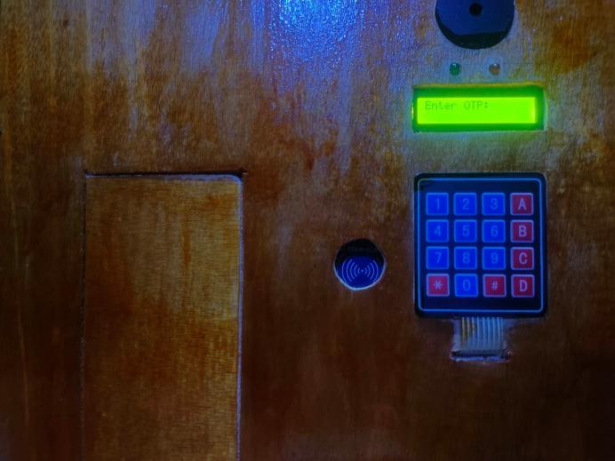

This chapter presents the results and analysis of the design and implementation of a reference frequency identification (RFID), keypad lock, and short message service (SMS) security system. The system was developed using an Arduino-based platform with an alert system.
In this chapter, the experimental setup and methodology used to collect data for the project will be described, followed by the presentation and analysis of the data collected. The performance of the RFID, keypad lock, and SMS security system will also be evaluated and compared to other similar systems.
Furthermore, this chapter will provide an overview of the software used in the project, including any programming languages or libraries utilized, and discuss any challenges or limitations encountered during the development of the software.
Overall, the results and analysis presented in this chapter will demonstrate the effectiveness of the RFID, keypad lock, and SMS security system and provide insights into its performance and limitationse
The approach and setting utilized to collect data for the study are described in the experimental section. A thorough explanation of the hardware, software, and testing methods utilized in the project are provided in this section.
1. Test the unregistered RFID: This test is conducted to ensure that the system can identify unregistered RFID tags. The system is tested with a variety of RFID tags that are not registered in the system (it will show on figure 3)
2. Test the efficiency of the RFID scan: This test is conducted to evaluate the efficiency of the RFID scanning process. The system is tested with a numbers of RFID tags, and the time taken to scan each tag is recorded. The data is then analyzed to determine the average scanning time and the efficiency of the scanning process. (it will show on figure 2)
3. Test the keypad lock: This test is conducted to ensure that the keypad lock is functioning properly. The system is tested with different combinations of keys, and the data is collected and recorded.
Figure 4.
4.This test is conducted to ensure that the buzzer system is functioning properly. The system is tested by triggering the buzzer using various methods, and the data is collected and recorded.
5.Test the SMS security system: This test is conducted to ensure that the SMS security system is functioning properly. The system is tested by sending messages to the system, and the data is collected and recorded.
Figure 5.
System send OTP
Figure 6.
Door Opened Notification
Figure 7.
Attempted to Open Notification
6.Test the OTP (One-time password): This test is conducted to ensure that the OTP system is functioning properly. The system is tested with different combinations of OTP
7.Test the alarm: This test is conducted to ensure that the alarm system is functioning properly. The system is tested by triggering the alarm using various methods, and the data is collected and recorded.
8.Test the two LED (Light-emitting diodes), green and red: This test is conducted to ensure that the two LED are functioning properly. The system is tested by turning on and off the green and red LED, and the data is collected and recorded.
Figure 8.
Green Light
Figure 9.
Red Light
9.Test the system itself: This test is conducted to ensure that the entire system is functioning properly. The system is tested by performing a series of tasks, such as scanning RFID tags, entering keypad codes, and sending SMS messages. The data is collected and recorded to determine the effectiveness of the system.
Figure 10.
The system
10.Test the bypass feature: This test is conducted to ensure that the bypass feature is functioning properly. The system is tested by attempting to bypass the security system using different methods, such as disconnecting the power supply, tampering with the wiring, or using a master key. The data is collected and recorded.
Here are some of the data of research experiments.
Table 2. RFID Sample Data
This data shows how efficient RFID keys, the red colour represent the red lights indicate that the RFID that used was not registered and the green colour was for green light it means the registered RFID was used
Table 3.
Efficiency of RFID Keys
At this column chart it will show how many attempts has been done on how many attempts can gives on the system.